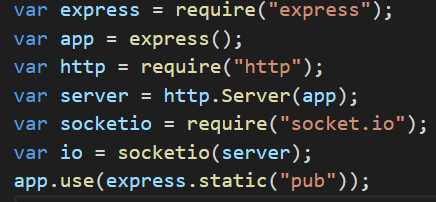

Node JS
Node is a free, open source JavaScript runtime environment.
It allows for Javascript to be executed outside of the the browser,
allowing for us to create non blocking asyncronous applications.
This is done by using a singular thread to talk between a server/database, the clients and an event queue.
The thread checks the event queue to know when the server/database has returned.
Node js is great for building IO heavy applications or when you know you need to access the database often.
It offers great performance on almost all operating systems.
Node setup, Package manager and installation
3. Now that we have node installed and initialized we can download any other libraries we want with the NPM command.
A great example is the "express" library. "NPM install express" will add all related setup info for the express library into the json file that init created.
Get and Post Requests
* Get and post are both http requests that handle how to access a webpage.
* A GET request is used to request data from a source. It is used to retrieve whatever information is in the request URL.
It is cacheable by the browser and will remain in the browsers history as its query and repsonse is displayed in the URL.
* A POST request is used to send information to a server to either modify or create a resource.
* Contrary to a GET requests, a POST request isn't cached and isn't visible in the URL.
Express
Express is a node.js framework used to create a webpages backend. It is used to handle http requests and routes as well as setting ports. Just like Node express also has a multitude of libraries that can be installed and used when needed. Express operates by directing the program what function should be called for each http request type and route.
Express Code Example Using Socket.io:
1.We require("express") in order to ensure that we include the express module
2. We then create an express object named app and use it to create a http server object with http.Server("app")
3. app.use(express.static("pub")) signals to express to allow for us to load files that are in the pub folder. These lines of code are most of the reason youre able to view the webpage right now.
Running and Connecting to a Node Server on Localhost
In Order to Run the Server
1. Open the command line and navigate to your projects directory/where you called npm init.2. Run the command "node nameOfServerCode.js" where the argument is the name of the file that contians your server code, this starts the server. Makesure you keep the command line open, if you close it your server turns off.
3. In order to connect to your server, go to your prefered browser and go to "127.0.0.1". Otherwise known as "localhost" Note: make sure you are connecting to the same port you specified in your server.js file. (port 80 is used by deafult, to change it use: "127.0.0.1::port#" instead) Once you connect to that url/ip you should get a message in the command line saying "sombody connected" as well as your webpage displaying in your browser.
Pros and Cons
Pros: Scalability, use of Javascript, Large amount of open source downloadables, great for IO heavy apps
Cons: Not good for CPU heavy apps(video or images). This is due to node being single threaded.
Companies that utilize Node
Paypal, Go Daddy, Groupon, IBM, LinkedIn, Microsoft
-Node is found among almost all online web applications.